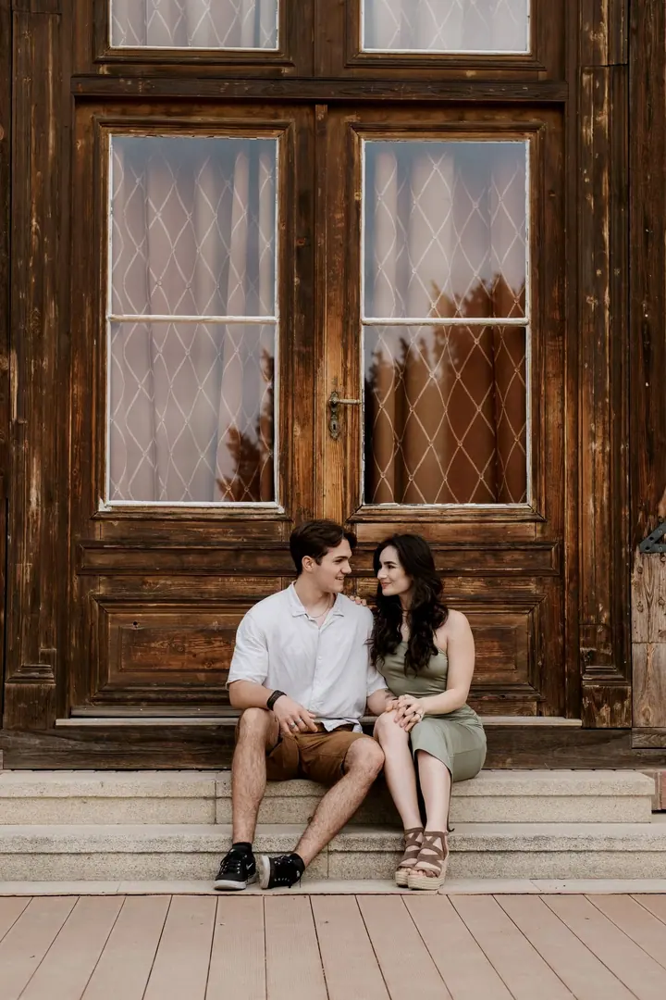
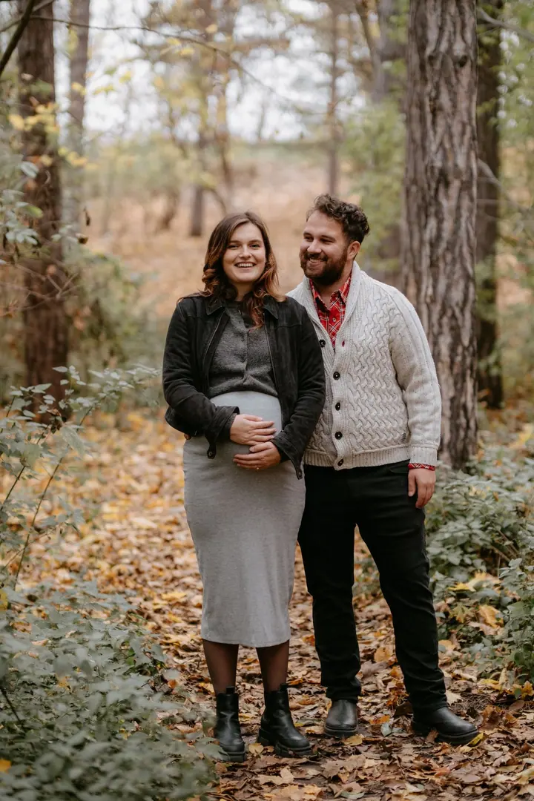
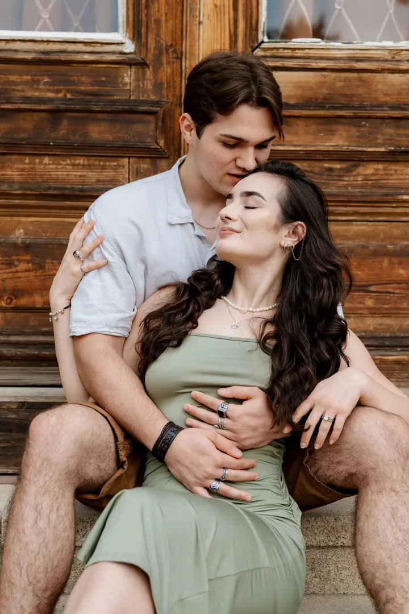

jedna
Svatební focení
Svatbu fotím spolu s kameramanem jako svatební duo, takže od nás můžete mít fotky i video. Cenu skládám na míru podle délky focení, počtu hostů, lokality a služeb, které si přejete.


Jmenuji se Tereza Nieweltová a jsem svatební a portrétní fotografka. Na svatby jezdím spolu s kameramanem, takže od nás můžete mít fotky i video. Můj přístup je přátelský, otevřený a plný radosti.
Více o mně
Co fotím
jedna
Svatbu fotím spolu s kameramanem jako svatební duo, takže od nás můžete mít fotky i video. Cenu skládám na míru podle délky focení, počtu hostů, lokality a služeb, které si přejete.
dvě
Klidné focení ve dvou, kde se navzájem poznáme ještě před svatbou. Pokud se můžeme osobně potkat, je předsvatební focení součástí ceny svatby.
tři
Focení v přírodě nebo ve městě, sama nebo s partnerem a klidně i s vaším psím parťákem. Přirozeně a bez strojeného pózování.
Fotky s miminkem i celou rodinou, ve kterých zůstanou malé detaily a vaše společná blízkost.
Let me tell your story


Za objektivem
Svatba je jedinečný den plný lásky, radosti a vzpomínek a já jsem u toho, abych ty chvíle zachytila tak, jak opravdu proběhly. Nechci vás stavět do strnulých póz. Chci, abyste se na fotkách poznali a abyste se u nich za pár let znovu usmáli.
Fotím spolu s kameramanem, tvoříme svatební duo. Fotky a video tak vznikají v jednom týmu, který se domluví a nebude si na svatbě překážet. Rádi vám pomůžeme vyprávět váš příběh celý.
Kromě svateb fotím předsvatební a párová focení, těhotenství, rodiny s miminky, portréty i sport. Ať jde o cokoli, vždycky se snažím, abyste se se mnou cítili uvolněně.
Tereza
Napište mi termín, místo a představu o svatbě. Cenu skládám na míru podle délky focení, počtu hostů, lokality a služeb, které chcete.
Potkáme se, probereme plán dne a poznáme se. Pokud se můžeme sejít osobně, je předsvatební focení součástí ceny.
Já fotím, kameraman natáčí. Zachytíme přípravy, obřad, gratulace i večerní zábavu podle toho, co jsme si domluvili.
Pečlivě vybrané a upravené fotky dostanete v online galerii, k nim svatební video, pokud jste si ho přáli.
Portfolio
Fotografie jsou ilustrační
Otázky
Cenu tvořím na míru. Zohledňuji délku focení, počet hostů, lokalitu svatby a požadované služby. Pro přesnou kalkulaci mi napište.
Ano, pokud se můžeme osobně potkat, předsvatební focení je součástí ceny svatby.
Ano, fotím spolu s kameramanem jako svatební duo. Můžete mít fotky i video od jednoho týmu.
Ano, fotím také páry, těhotenství, rodiny s miminky, portréty a sport. Cenu domlouváme individuálně.